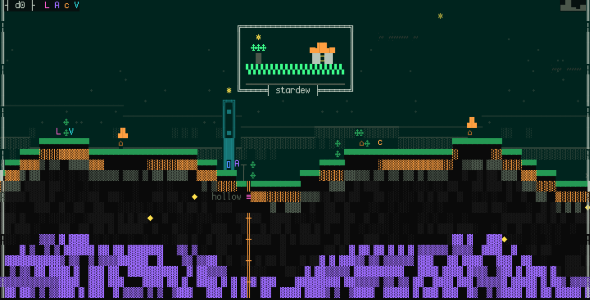
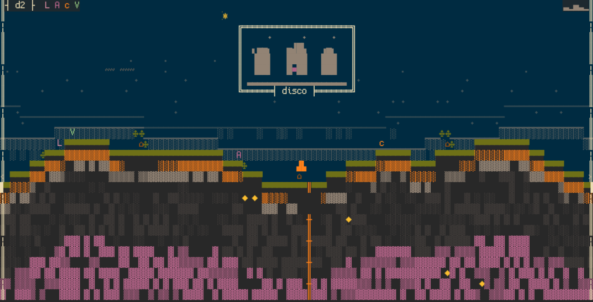
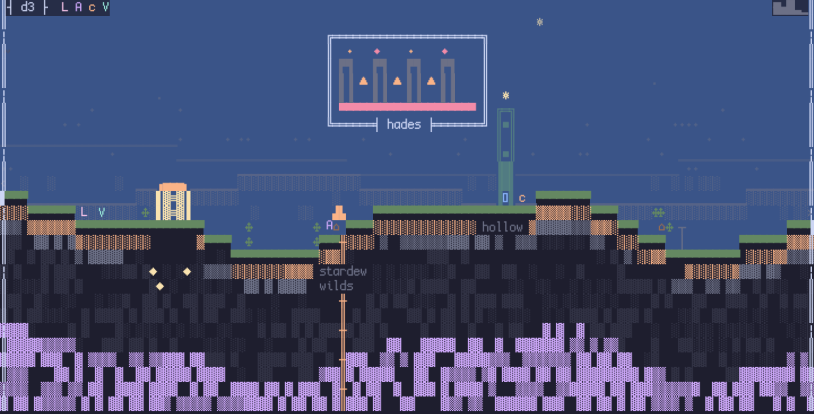
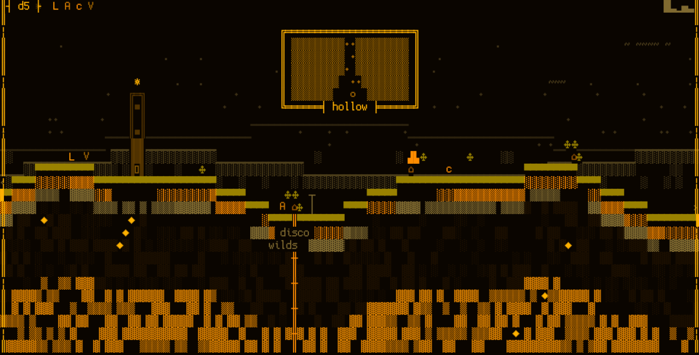

2026-08-23 · claude-authoring rung 1 · four authored murals, live compose path, wing per shot.
This eyeball approves (or re-cuts) the corpus. On a pass the smoke's bars freeze at the values below
and the cold test unblocks. Full record: 2026-08-23-mural-seed-corpus.md.
Bars, frozen before you look:
B1, a picture. Each mural reads at a glance as a scene or a shape, not as texture, not as UI text.
KILL: any mural you read as noise means that mural is re-authored and the corpus re-eyeballed; no freeze.
B2, the ship bar. None is "would not ship" hanging beside the desk's own art.
KILL: same consequence as B1.
B3, in the hour. The blank cells read as sky showing through; the mural belongs to the window's night or day, not a poster taped over it.
KILL: reads as a pasted poster means density re-cut downward, re-shoot.
PASS = all three, spoken (per mural or for the corpus as one). Bars never soften after observation;
a re-cut mural re-enters under the same bars. One trade on the record, not a bar: the rect's return re-arms the
08-08 sky-decoration eviction (the ☼ included) on these four wings only.
d0 · stardew (recent) · brief: the game's world
"stardew is this wing's flagship and merely recent, no marked personal arc in the data, so the mural paints the valley itself: sun up, lit window, field rows."

density 0.500 · letterforms 0.000 · also hangs live on your desk (t1) after a relaunch
d2 · disco (dusty) · brief: you and the game
"disco sits dusty in the data, a whole city bought and never entered, so the mural is the relationship: a skyline under dust with one window still lit for you."

density 0.509 · letterforms 0.000
d3 · hades (loved) · brief: the game's world
"hades is loved and alive in the data, an ongoing affair rather than a memory, so the mural is the place itself: the pillared hall, braziers lit, embers rising."

density 0.464 · letterforms 0.000
d5 · hollow (mastered) · brief: you and the game
"hollow is mastered, the one descent this library finished, so the mural is the relationship: the shaft mapped solid, the stitched path down, the bottom reached."

density 0.827 · letterforms 0.000 · the densest of the four, closest to the 0.92 ceiling; the reviewer flagged it reads near-solid, which is a B3 question and yours to judge
Evidence, not judgment
The same JSONs re-dress under every pack by construction (palette keys, never hex):
d5 renders amber under its wing's pack, d2's towers grey under the blue night, d0 green under phosphor.
Provisional machine bars the corpus calibrates: density [0.25, 0.92], letterforms ≤ 0.15.